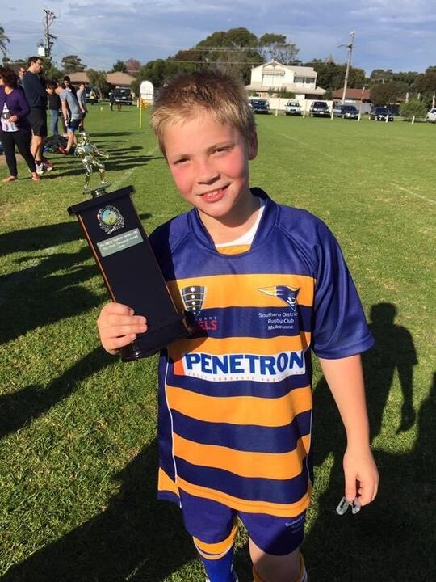
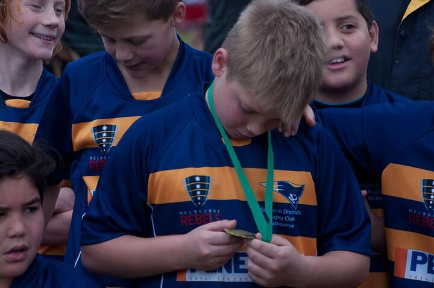

Polarity of Grief
Chapters
Every moment
Reading with the book
← All chapters
Part One · Him
Australia, Finding His Tribe
Melbourne, Australia
The first rugby practice
5 photographs
Winning the grand final
4 photographs

The team awards from Coach Rob
1 film · 3 photographs

Best on Ground
3 photographs
The bloody nose
Media still being gathered